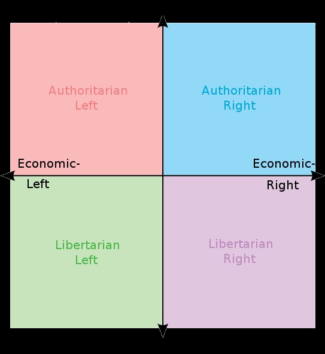
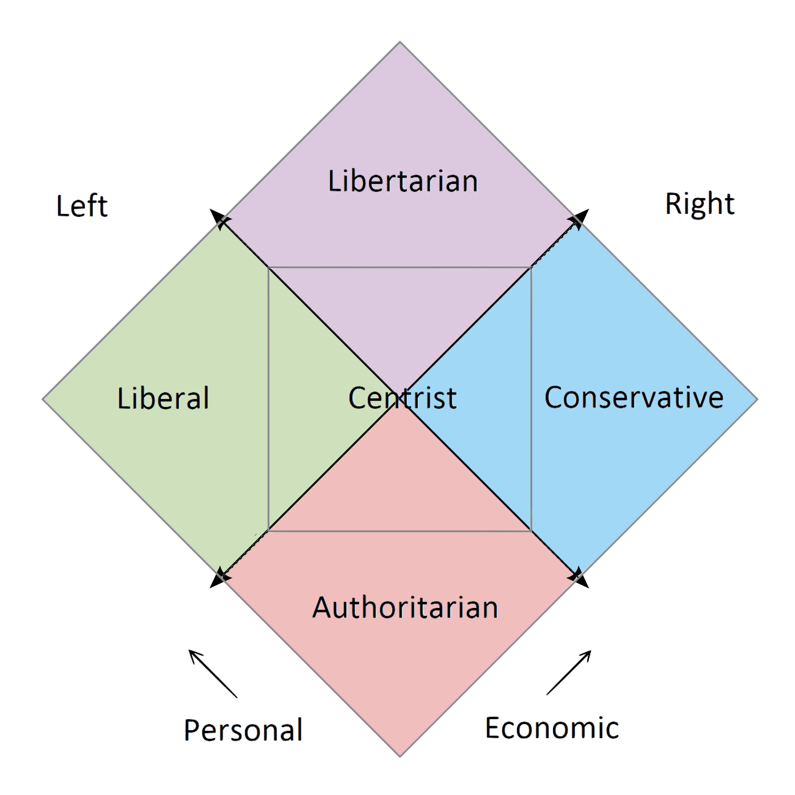
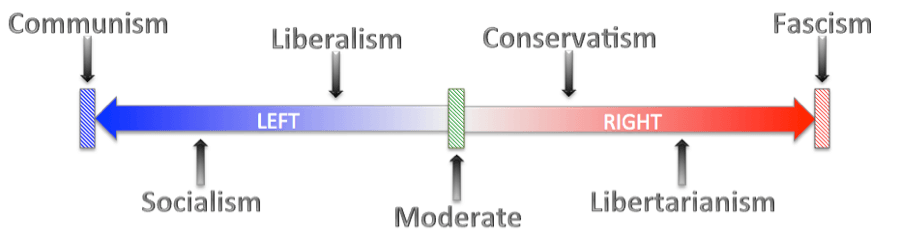

POLITICAL IDEOLOGIES
By Haroon Rizwan
The political compass
The political compass is a graph used to plot a variety of different political and ethical views and standpoints and fundamental political principles by which a state is governed.

Libertarianism
Libertarianism is a political ideology where personal and economic freedom is valued in society. Libertarianism emphasizes the general principle of being able to do what you desire and having an opinion.
Authoritarianism
Authoritarianism is a viewpoint in which the government and state power is valued more than a citizen's freedom, but usually does not control every aspect of a person's life. (not to be mixed with totalitarianism)
Liberalism
Liberalism is a political philosophy which is based on equality and equity before the law, liberalism focuses on personal rights, human rights, free markets and democracy, it goes against monopolies, monarchies and nobility.
Conservatism
Conservatism is a social and cultural ideology which promotes traditional values and beliefs, organised religion and usually opposes modernism, it believes in the principle of the rule of law and tends to prefer economic freedom rather than personal freedom.
Socialism
Socialism is a political viewpoint and social organisation where the community should control and regulate production and distribution as a whole, socialism promotes equality and public ownership. (not to be mixed communism).

Anarchism
Anarchism is a political ideology where authority, government, and the state are all rejected, which are portrayed as unnecessary and harmful, anarchism supports empowering citizens by opposing all prejudice and discrimination.
Centrism
Centrism is an ideology where all accepts or involves all ideologies on the political graph and spectrum, usually plotted in the center or middle of graphs due to its neutrality
Progressivism
Progressivism is a political ideology which supports social reform and promotes advancements in technology, economic development and social organisation, it aims to promote human conditions and living.
Capitalism
Capitalism is an economic system and ideology where all trade in a country is controlled by private individuals whose goal is solely to make profit, decision making in a capitalistic society is decided by wealth, property and ability to liquidate and move capital.
The political spectrum
The political spectrum is a graph which is used to plot ideologies and beliefs on 1d scale to visualise differences between them. The political spectrum may often be inaccurate but is still reliable to show where different theories and principles stand.

Leftism
Leftism or left wing politics is a political ideology in support of social equality and egalitarianism, leftism usually opposes social hierarchies and tries to reduce inequalities in society.
Rightism
Rightism or right wing politics is a political ideology which supports social hierarchies and believes that tiers in society are normal, rightism supports tradition and natural law.
